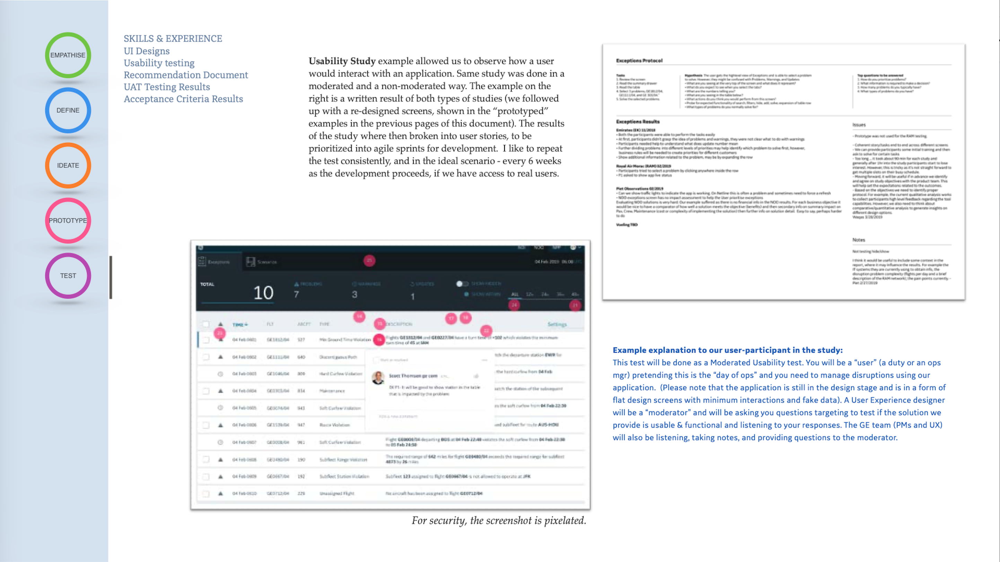
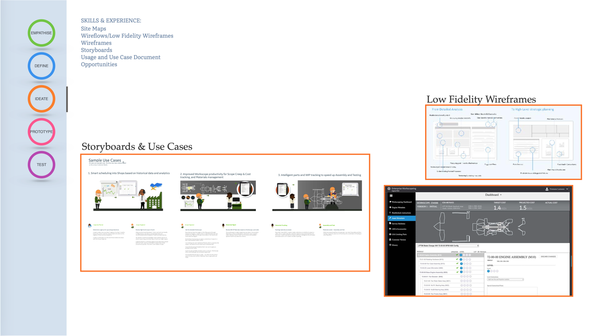
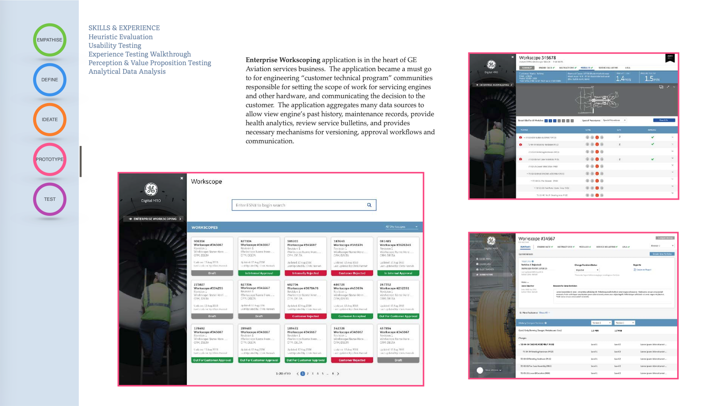
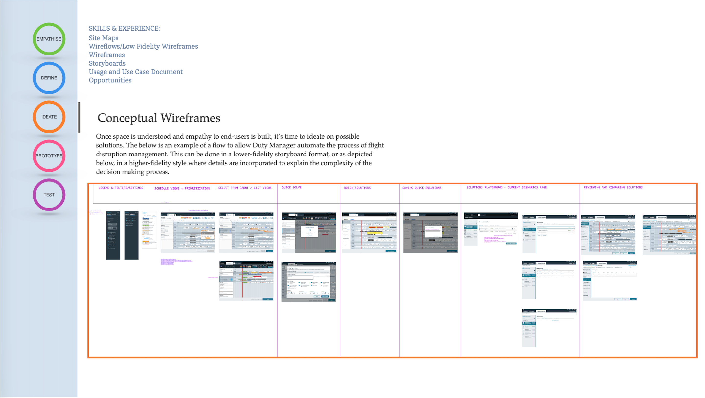
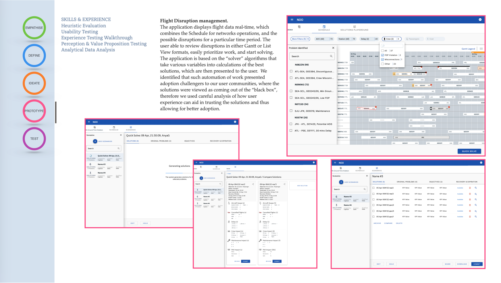
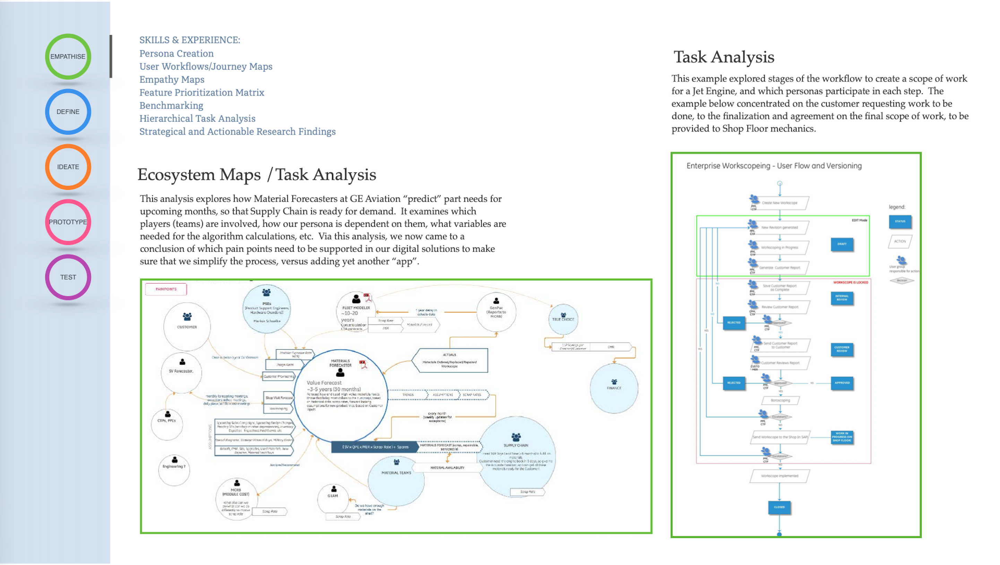
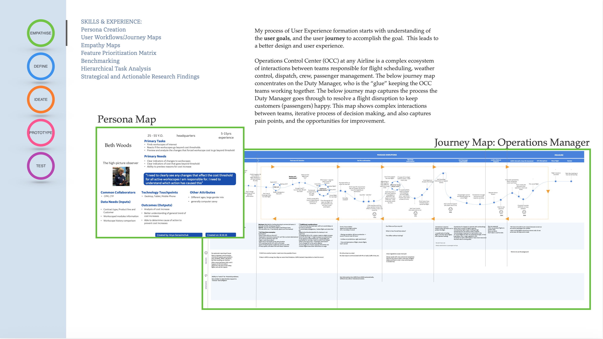
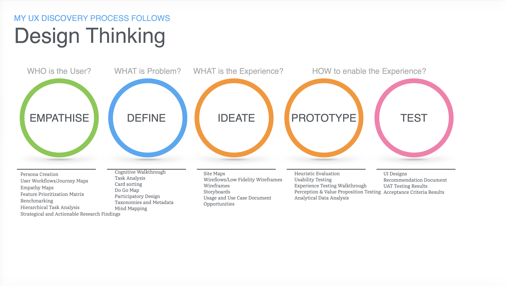
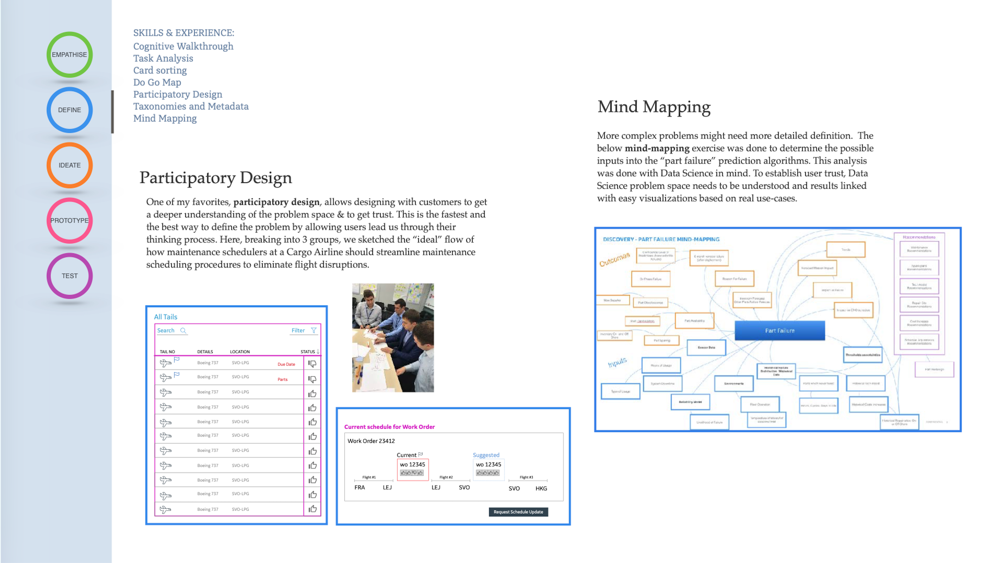
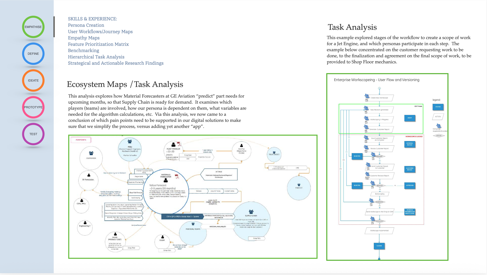

Enterprise Product Leadership
- End-to-end product strategy and cross-functional delivery.
Anya Gerasimchuk
Product, UX & AI Innovation
Led design maturity transformation, clinical workflow optimization, and enterprise product alignment for a healthcare platform.
Designed systems to support predictive maintenance, asset performance, and critical operations.
Delivered mobile and desktop systems to improve workforce workflows and supply chain coordination.
Built UX organization, design systems, and product foundation for global industrial platforms.
Established governance, component libraries, and cross-product consistency for enterprise teams.
Repositioned UX from a support function into a strategic driver of business and product success.
This set of GE Aviation portfolio examples highlights enterprise UX and product work for aviation operations, capacity planning, and disruption management. Each case demonstrates research-backed design, operational workflows, and high-impact visual storytelling.

Aviation usability study outputs, acceptance criteria, and operational feedback from moderated tests.

Enterprise workscope and capacity planning screens designed to support shop floor coordination and maintenance forecasting.

Enterprise workscope experience for technical program teams, with approval workflows, engine history, and customer communication.
View case details →
Flight disruption management tool with solver-based prioritization, real-time schedule visualization, and operator workflow support.
View case details →
Storyboarded discovery and low-fidelity wireframe workflow for flight disruption operations.
View wireframe details →
Use case journeys and low-fidelity storyboards that guide aviation disruption workflow design.
View storyboards →
Collaborative mind mapping and task analysis for aviation operations and decision-making workflows.
View design detail →
Persona and journey mapping for duty manager workflows and operational handoff.
View persona map →
UX discovery process mapping from empathize through test for aviation operations.
View design thinking →
Visual workflow mapping for part prediction and maintenance task analysis.
View details →
Task analysis and ecosystem mapping for material forecasting and maintenance workflow design.
View task analysis →Executed a moderated usability study that simulated a real “day of ops” scenario for aviation operations managers. Participants were asked to manage disruptions using a prototype application while product and UX teams observed, asked questions, and collected actionable feedback.
This case illustrates how research-driven product design turns enterprise complexity into usable workflows, especially for high-stakes aviation disruption management.
Designed the enterprise workscope experience for GE Aviation’s customer technical program community, enabling engineers and service planners to review engine history, approval status, and maintenance scope in a single workflow.
This example highlights how enterprise design brings a complex, multi-source aviation workflow into a coherent and actionable product experience.
Built a flight disruption management experience that combines schedule visualization, automated solver recommendations, and operator triage workflows to improve decision confidence.
This use case demonstrates how UX design can make complex optimization output understandable and actionable for operations teams.
Outlined the conceptual wireframes and service flows that shape flight disruption operations, from scenario filtering to solver review and solution comparison.
This section highlights the importance of conceptual flows in aligning complex airline operations to a coherent product experience.
Developed storyboards and use case narratives to clarify workflows for duty managers, engineers, and operations teams during disruption planning.
This section shows how storyboarding and use case documentation support product alignment for complex aviation workflows.
Led participatory design sessions and mind mapping exercises to define the core problems, user needs, and decision pathways for aircraft maintenance scheduling.
This section highlights how participatory design brings user context into complex enterprise product planning.
Illustrated the UX discovery process for aviation operations with a Design Thinking framework that moves from empathy and definition to ideation, prototyping, and testing.
This example demonstrates how structured UX thinking guides enterprise product strategy and validates complex operational workflows.
Created a persona map and journey map to visualize the duty manager experience within flight disruption operations, showing user goals, collaboration points, and pain points across the control center workflow.
This section demonstrates how persona and journey mapping ground enterprise design in real operational roles and workflows.
Created a mind-mapping exercise to connect part failure prediction, scheduling impact, and operational handoff for aviation maintenance planning.
This section demonstrates how visual mapping helps translate complex aviation workflows into actionable design and product decisions.
Explored ecosystem mapping and task analysis to understand how material forecasters, schedulers, and maintenance teams interact across the GE Aviation supply chain.
This section shows how ecosystem and task analysis help simplify enterprise complexity by exposing the right problems to solve.